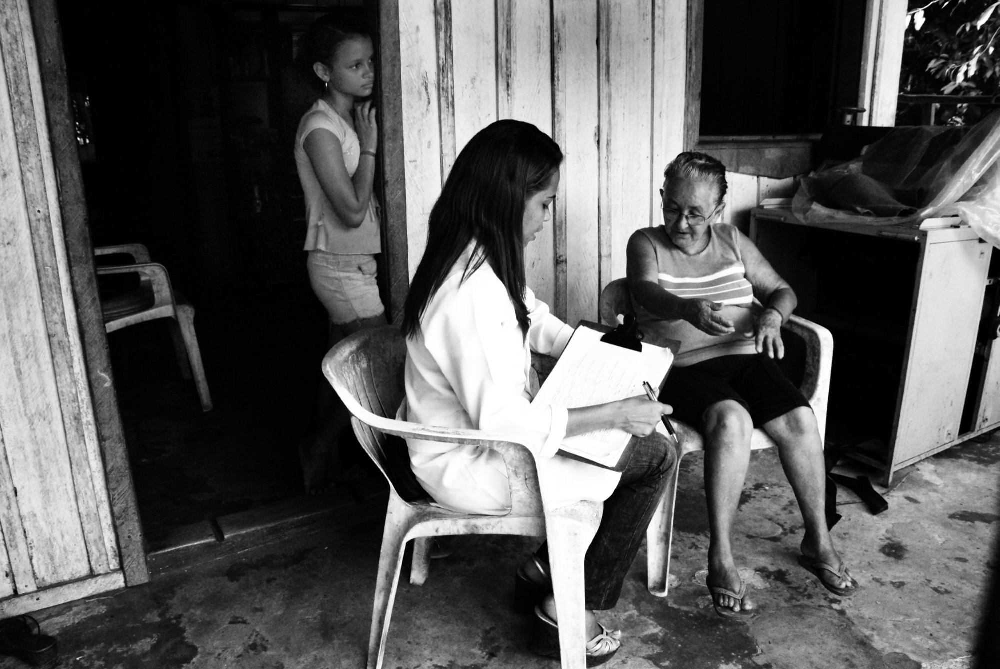
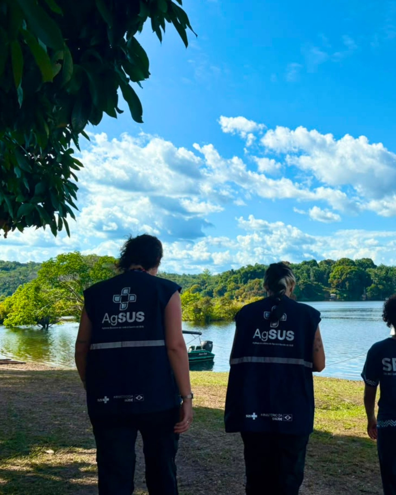
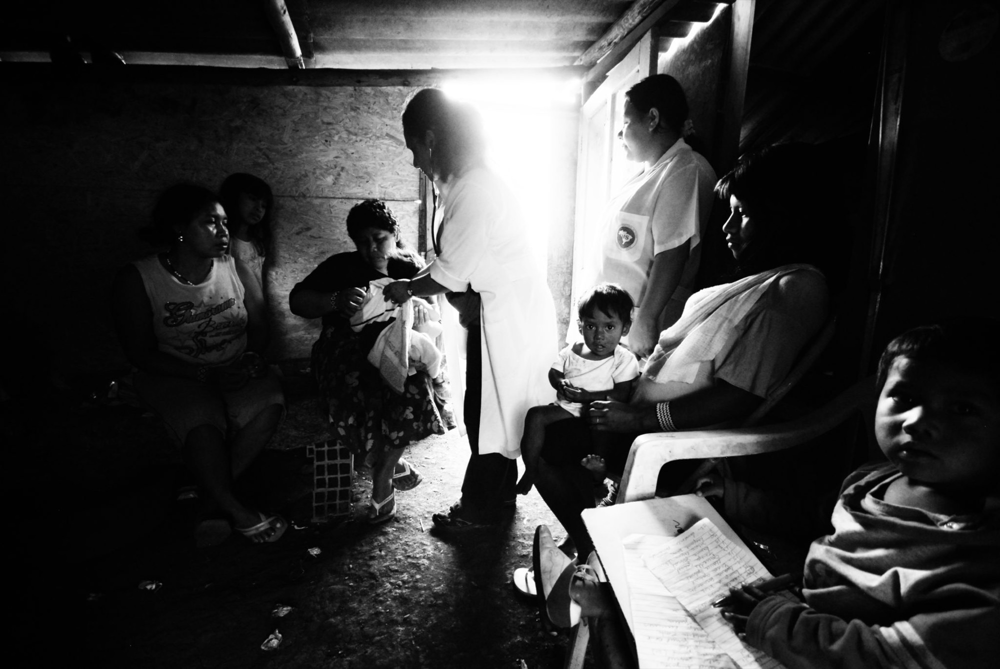

Cuidado em Saúde Mental & Integração de Rede
Começamos com sua Rede ou Equipe do mesmo jeito que um psicólogo olha uma pessoa: escutando primeiro, entendendo como as partes se ligam, e só então dizendo por onde começar. Mas não paramos aí: nós executamos!
Foto: Radilson Carlos Gomes, fotógrafo do SUS.
Cuidado em Saúde Mental
Quando a equipe está adoecida e em sofrimento. Primeiro se interrompe o que está machucando as pessoas.

Integração de Rede
Quando a equipe é madura, mas os serviços não conversam entre si, e quem sente isso é o cidadão.

Cuidado em Saúde Mental para a Equipe
Imagine que a gente chega para a primeira conversa com a sua equipe. E encontramos que, enquanto alguns se esgotam sustentando mais do que podem, muitos desabam silenciosamente.
Estamos vivendo uma epidemia de Saúde Mental em todo o mundo: o cuidado é o caminho.
Foto: Radilson Carlos Gomes, fotógrafo do SUS.
Três coisas concretas.
Grupos de Apoio à Equipe
Grupos humanos, conduzidos presencialmente por psicóloga especializada, onde a equipe elabora junto o que vive e aprende a se cuidar.
Quero implementarPlantão Psicológico para Funcionários nas Unidades
Acontece em sala apropriada, mas acessível ao ambiente do trabalho real. Porta de entrada aberta para quem busca ou precisa de acolhimento imediato ou pontual.
Quero implementarPsicoterapia Online
Acompanhamento semanal com psicóloga da PAAPS, para as pessoas da equipe contempladas no contrato. Online, para caber na rotina de quem trabalha o dia inteiro.
Quero implementar
Integração de Rede
Imagine o quanto prejudica uma Escola que não conversa com o CRAS Infanto-Juvenil da cidade. Imagine uma rede que deveria trabalhar junta e não se comunica, que poderia ter apoio, mas seguem isoladas.
O problema é uma cultura de não-colaboração: o caminho é a integração.
Foto: Radilson Carlos Gomes, fotógrafo do SUS.
Ninguém acorda querendo travar um encaminhamento. O que existe é uma forma de trabalhar que foi se acomodando ao longo dos anos, em serviços que raramente se sentam na mesma mesa.
Os serviços recebem:
- Fluxos desenhados junto com quem executa
- Discussão de casos em ambiente seguro e respeitoso, com acordos e mediada por especialistas da PAAPS
- Acordos escritos entre os serviços
- A manutenção desses fluxos e acordos ao longo do tempo
- Pessoas escolhidas dentro de cada equipe como representantes de comunicação nos momentos-chave
- Realinhamento dos fluxos quando a realidade muda
- Manutenção das relações entre as equipes

Cuidar da Ponta, Impactar o Mundo